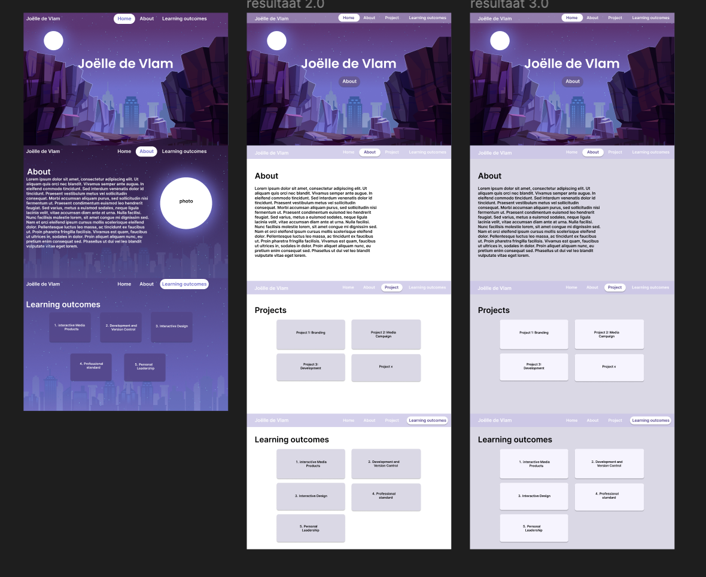

Interactive Media Products
"You orient in the relevant tech, media and design landscape and create interactive media products that you have tested with users and stakeholders."
Portfolio
I first started with making the lay-out in Figma, the place where I wanted everything to be and how I wanted to make everything clear. After I made the lay-out, I was looking for inspiration for my portfolio, how I wanted to design it. I put everything in a document and made my design in Figma. I did usertests on this and changed things based on the feedback I got.
For example some feedback I got was at the background of my homepage, I had a skyline of New York, They told me it was better for me to do a skyline of Maastricht, because that's where I'm from.
So I was searching for a good skyline of Maastricht, and then I photoshopped the purple color on it so it matches my theme. Below the iterations.
After I made the front page design I went further with the rest of the design. I wanted this to be more basic but also clear.
My first design was the gradient I had used for the frontpage, but all the way to the bottom. I got as feedback that it could be annoying to work with and it didn't look really professional. After I got this feedback I made the lay-out white with purple buttons, I did usertests on this and I got as feedback that it was boring and it wasn't really in my theme.
After this feedback I decided to make the background a very light purple so I kept using the puprle and make the buttons a little lighter purple.

After I made this design, I went further with the interaction of the buttons. What do I want the buttons to do when you press it and how do I want the lay-out of the next page when you press it.
My first idea was to make a page with one project and in the header make a button to go back to the home page so you can go to the learning outcomes. But I got as feedback that it was detour so not very useful.
Then I went back to Figma to make different designs which I did usertests on several people, and the general feedback was, just make a page for each project, explain the project, and on the pages of the learning outcomes, explain what you did per project, per learning outcome. that's how I came on my design which I have now.
I also made my Figma document clickable.

here is the link to my Figma